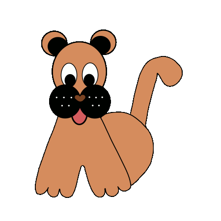

All animals at our shelter are in need of a second chance. They have been lost, given up or abandoned. They are all unwanted and helpless. You are giving them a new life in a loving home. There are not enough homes for all the animals that are born every year. Adopting from a shelter helps weaken the pet overpopulation cycle. Each year 8 to 12 million dogs, cats, puppies and kittens are euthanized because there are simply not enough homes for them. Throughout the country, thousands of commercial pet-breeding facilities and backyard breeders produce millions of animals for sale in pet stores and through newspaper ads. Often known as puppy and kitten mills, these facilities repeatedly impregnate female dogs that spend their entire lives in cages without human companionship. These unfortunate animals are often in intolerable environments, forced to produce litter upon litter, and are destroyed after they become unprofitable assets. Adopting a shelter animal means you don’t support such cruel practices.